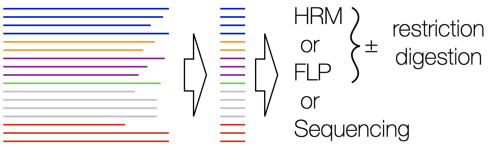
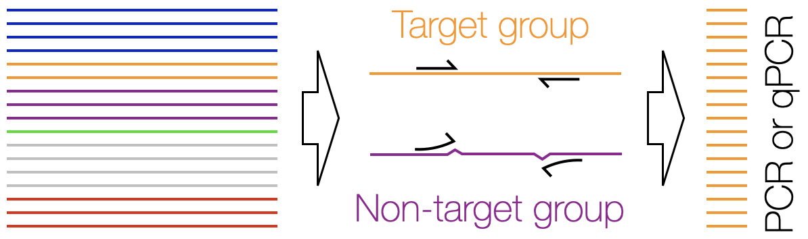
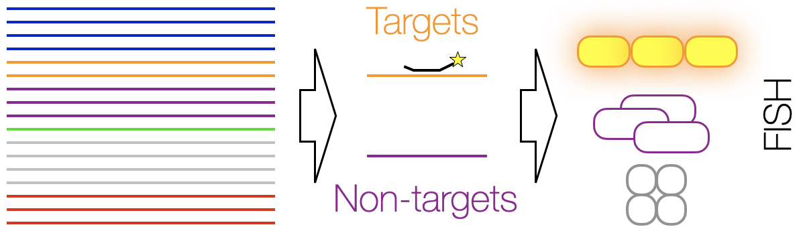
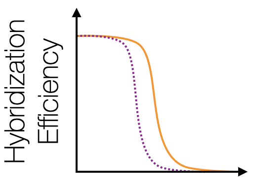

Oligo Design Overview
DECIPHER includes state-of-the-art methods to accurately predict the hybridization of oligonucleotides to DNA or RNA sequences. These methods assist in the design of optimal experiments with a wide variety of objectives.Why use DECIPHER for oligo design?
- DECIPHER contains many powerful tools for a wide variety of oligo design tasks.
- Unlike other popular approaches, each of DECIPHER's oligo design functions uses state-of-the-art free energy based prediction of hybridization.
- Both hybridization and elongation efficiency are considered when designing PCR primers.
- DECIPHER's oligo design tools are designed to handle large-scale and challenging design problems.
Design Signatures - Given a FASTA file of unaligned DNA sequences in groups, design PCR primers that will amplify all groups for optimal differentiation with high resolution melting (HRM), fragment length polymorphism (FLP), or sequencing.

Design Primers - Given a FASTA file of aligned DNA sequences in groups, design PCR primers that will only amplify one group.

Design Probes - Given a FASTA file of aligned RNA sequences in groups, design probes for detection of one group with fluorescent in situ hybridization (FISH).

ProbeMelt - Given a set of probe and target sequences, predict their melt curves.
